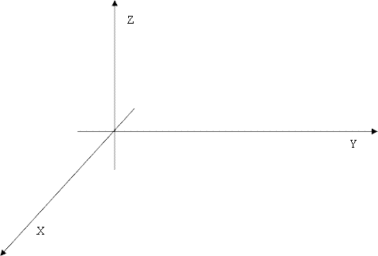

Home Page
F.A.Qs
Statistical Charts
Past Contests
Scheduled Contests
Award Contest
| Online Judge | Problem Set | Authors | Online Contests | User | ||||||
|---|---|---|---|---|---|---|---|---|---|---|
| Web Board Home Page F.A.Qs Statistical Charts | Current Contest Past Contests Scheduled Contests Award Contest | |||||||||
|
Language: Robots
Description Little Y falls in love with robots recently. It's really a complex job to run a robot. So we will start with a relatively simple work. A basic problem is to handle the robot hand. The robot hand consists of N + 1 joints which are labeled from 0 to N. There's a hard rod between the kth joint and the k+1th joint. To make the problem simple, we will consider the joints and rods as N + 1 points and N segments (their thickness would be ignored in our problem) in xyz 3D (three-dimensional) coordinates. The 0th joint is always at (0, 0, 0). As the first step to handle a robot hand, Little Y needs to process some ROs (rotation operation). There are 3 parameters in RO: an integer idx in [0, N-1], a real number Alpha in [0, 2π] and a 3D non-zero vector P. With such RO, the hand from joint idx to joint N will be rotated. This part will be rotated around an axis for alpha radian. The axis is paralleled to P and passes joint idx. In our rotation, you may assume that movement will not be blocked.  Now we’ll explain the direction of rotations. You may easy find out your front (F), back (B), left (L), right (R), up (U) and down (D) direction. Then you may assume x-axis goes from F to B, y-axis goes from L to R and z-axis goes from D to U. For example, define 3D vectors A(1, 0, 0), B(0, 1, 0) and C(0, 0, 1) and a angle Alpha = π⁄2. Rotate A with Alpha and axis(C) will results in B. Rotate C with Alpha and axis(B) will results in A. Rotate B with Alpha and axis(A) will results in C. Consider joint idx = (1, 1, 1), rotate (2, 1, 1) with angle = π⁄2 and axis (0, 0, 1) will results in (1, 2, 1). However, there are so many joints and ROs for Little Y that he cannot handle them! So he asks you for help. Try to help him! Input Input file consists of several test cases, for each test case:
The first line contains 2 positive integer N and M (N, M ≤ 50000), which means there are N + 1 joints and M ROs in the test case. In the next N + 1 lines, each line will contains a real number (Xi, Yi, Zi). The next M lines each line starts with an integer CMD which is 1 or 2. If CMD = 2, then it follows an integer t in [0, N]. It means a query to the position of joint t. If CMD = 1, then it follows 5 number idx, alpha, (Xp, Yp, Zp), standing for a rotation operation The input file ends with one line consisting of two 0 separated by a space. You may assume all real numbers in input data are smaller than 104 in absolute value. Output For each test case:
For each operation with CMD = 2, output one line containing 3 real number (Xt, Yt, Zt), describing the position of joint t. Keep 4 digits after the decimal point. Output an empty line after each test case. Sample Input 1 2 0 0 0 1 0 0 1 0 1.5707963267948966192313216916398 0 0 1 2 1 2 3 0 0 0 1 0 0 2 0 0 1 0 1.5707963267948966192313216916398 0 0 1 1 1 1.5707963267948966192313216916398 1 0 0 2 2 0 0 Sample Output 0.0000 1.0000 0.0000 0.0000 1.0000 1.0000 Source POJ Monthly--2007.07.08, Guo, Huayang |
[Submit] [Go Back] [Status] [Discuss]
All Rights Reserved 2003-2013 Ying Fuchen,Xu Pengcheng,Xie Di
Any problem, Please Contact Administrator